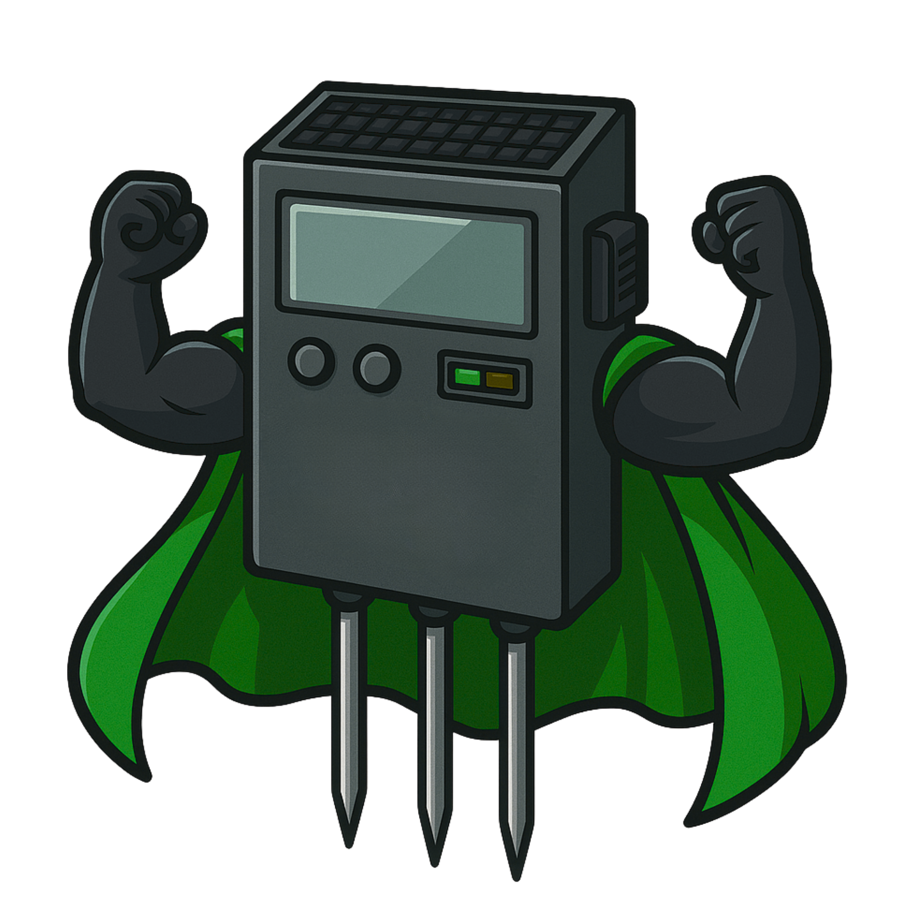
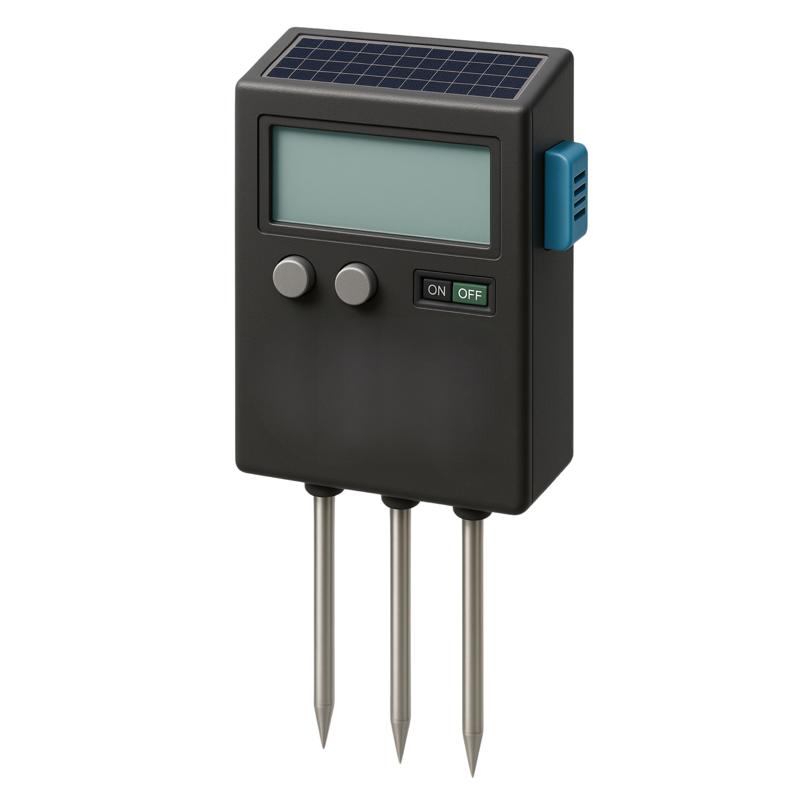

N
NITROGEN--mg/kg

FERTI-HERO View Results ↗FERTI-HERO measures soil nutrients and turns NPK readings into clear, data-driven fertilizer recommendations for rice production.

Measure
Collect soil NPK data
Analyze
Compare readings with targets
Recommend
Get a fertilizer guide
FERTI-HERO is a smart soil monitoring concept designed to make nutrient information easier to understand and use. Instead of showing raw measurements alone, the system connects readings with target nutrient levels to support fertilizer planning.